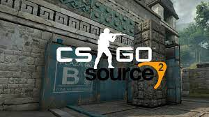

Os jogadores de Counter-Strike: Global Offensive (CS:GO) podem estar próximos de testemunhar uma das maiores atualizações da história do jogo. Um dos insiders responsáveis por divulgar a série de notícias sobre o Source 2 revelou que a Valve adicionou arquivos referentes ao motor gráfico ao jogo.
Um dos principais insiders do atual cenário de Counter-Strike, Aleksey "OverDrive" Biryukov compartilhou em seu canal do Telegram que recebeu de suas fontes da Valve a informação que a Natus Vincere estaria testando o CS:GO 2.
